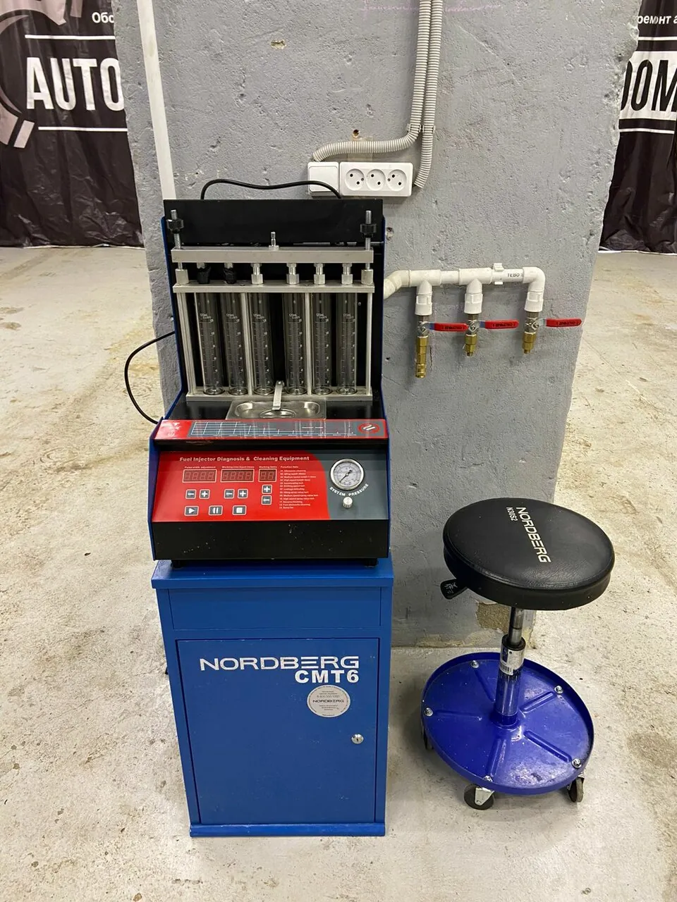
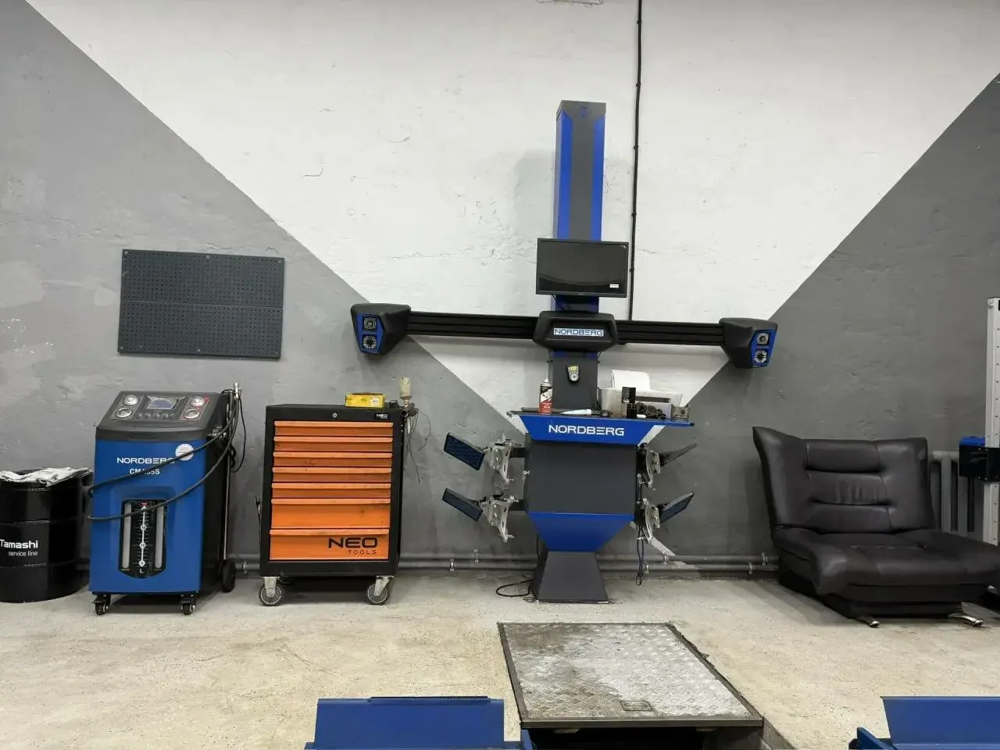
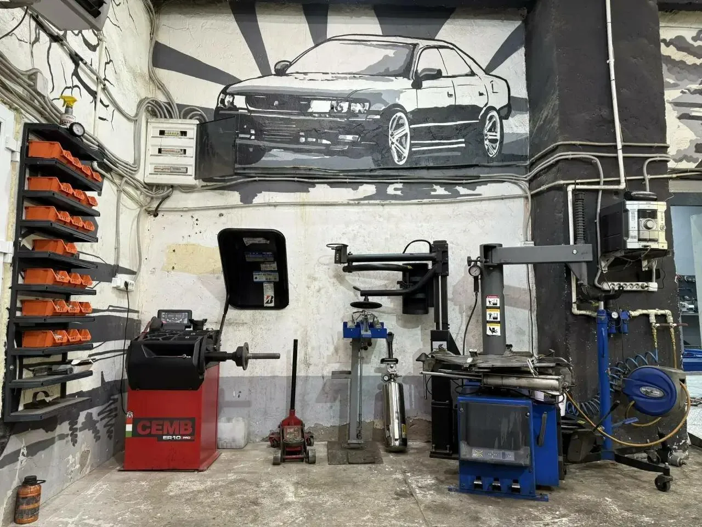
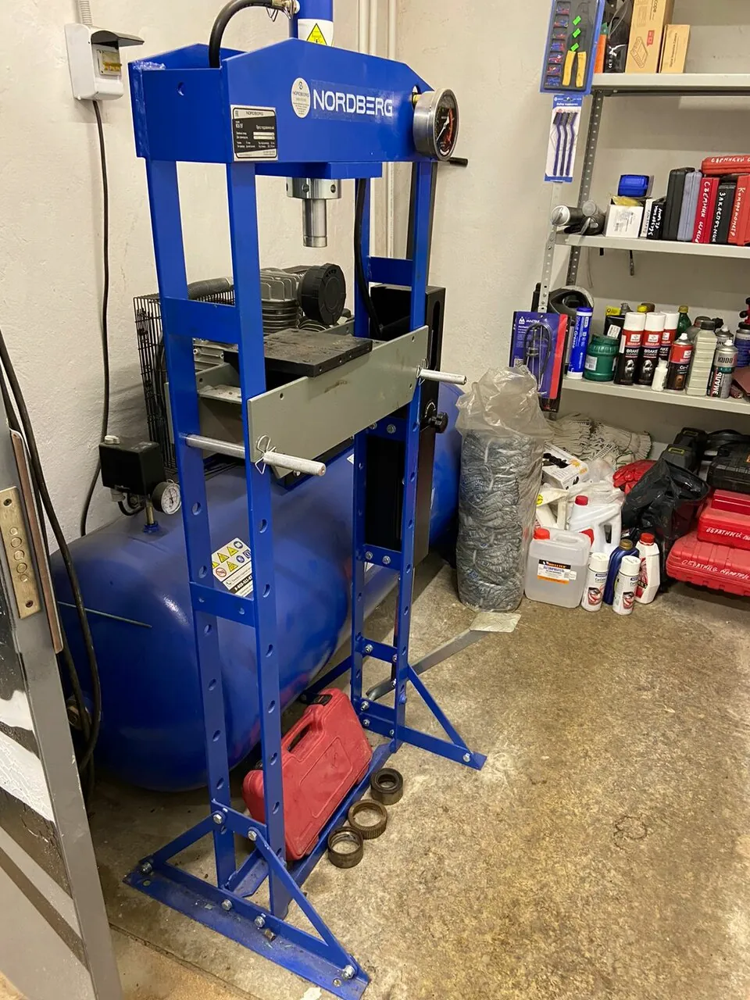
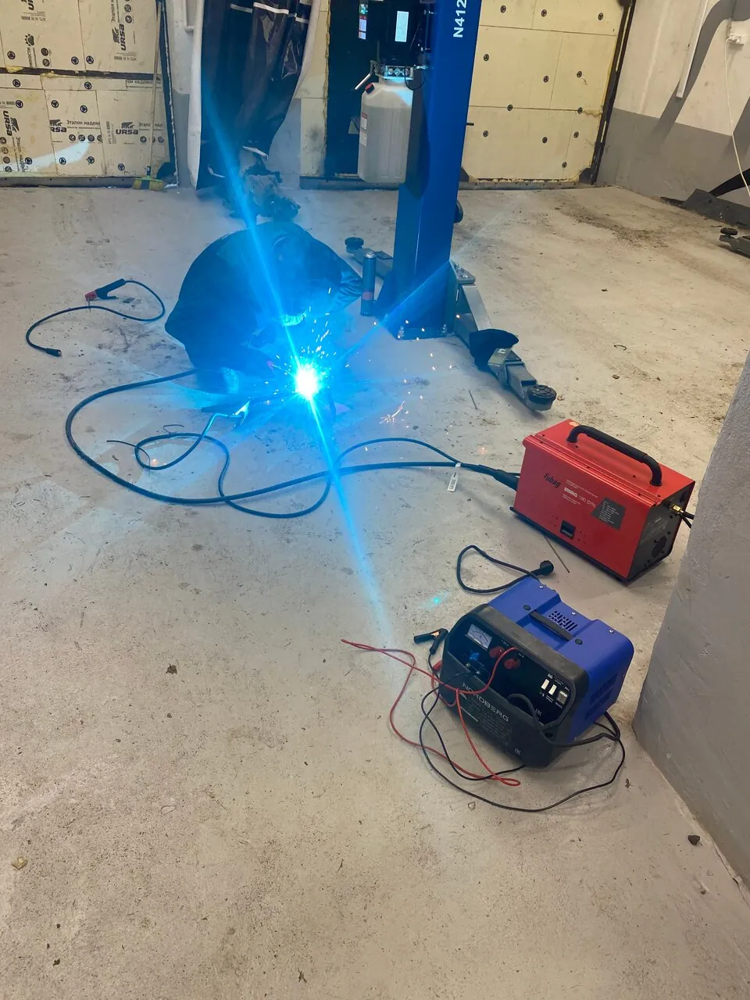
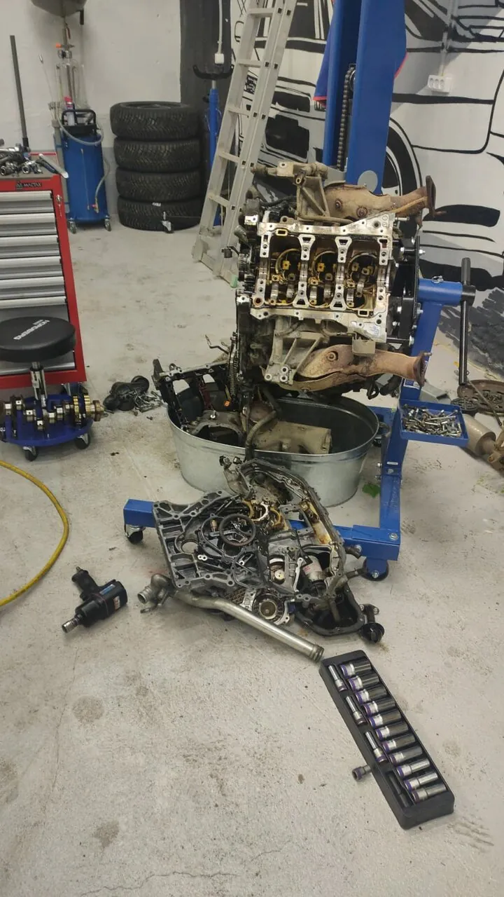
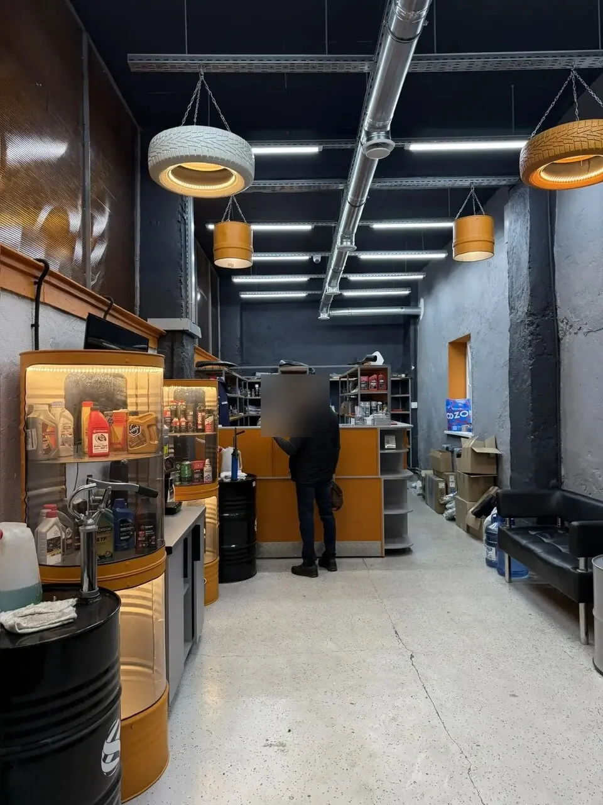
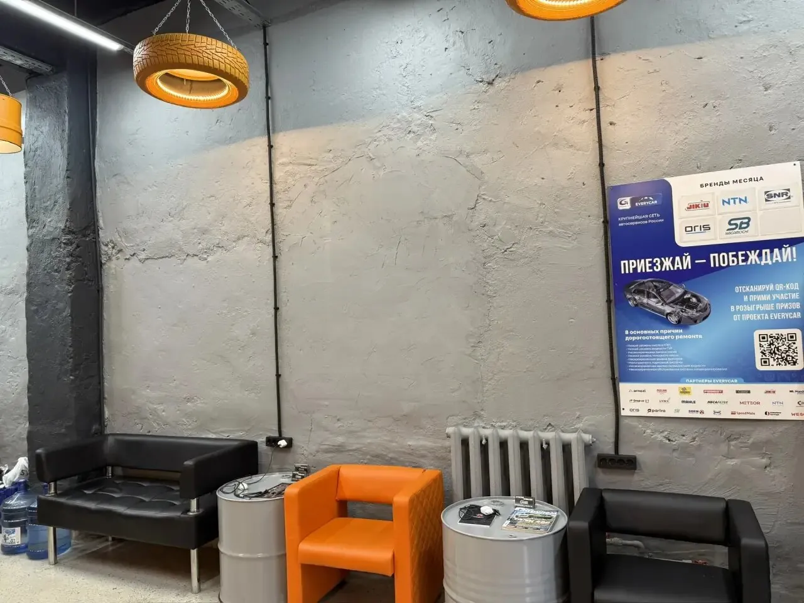
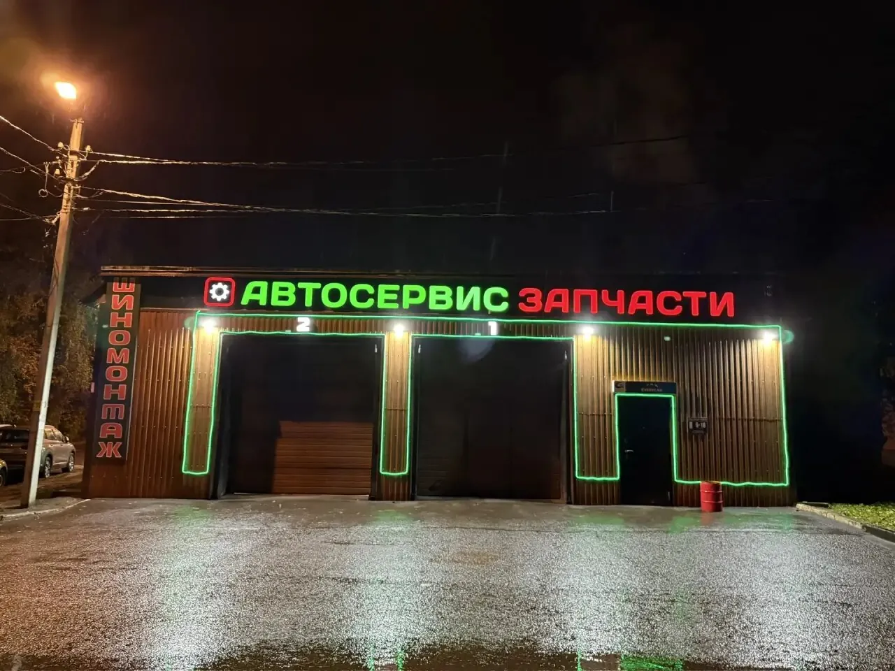

Отличный сервис! Отличные грамотные парни! Поменяли цепь в двигателе на Ссанг Енге, устранили неполадки в двигателе которые как выяснилось появились в результате недобросовестного мастера из другого сервиса. А также очень удобное расположение, у меня так вообще рядом с домом, плюс ко всему подскажут что лучше из запчастей купить, сами закажут и привезут без накруток! Никак в магазинах автозапчастей! Минусов не увидел никаких только плюсы! Так держать!
что делают
От замены масла до сварки аргоном
Легковые, коммерческие и грузовые машины, УАЗ.
- ТО и замена масла
- Компьютерная диагностика
- Ультразвуковая чистка форсунок
- Ремонт двигателя
- Эндоскопия
- Шиномонтаж и балансировка
- 3D-сход-развал
- Прокатка и проточка дисков
- Ходовая и тормоза
- Заправка кондиционеров
- Выхлоп и катализаторы
- Сварка, в том числе аргоном
- Автоэлектрика
- Слесарные работы
- Запчасти на заказ
цех
Оборудование – на фото, а не на словах







магазин при сервисе
Не нужно ехать в магазин – он здесь же
Запчасти, масла и автотовары в том же здании. Нужной детали нет на полке – её закажут.
«Можно провести диагностику, после чего заказать здесь же детали (очень удобно по vin).»
Александр Александрович
какие машины
От ретро 1987 года до «турбо француза»
- 1987
«Привёз к ребятам на техобслуживание ретро автомобиль 1987 года выпуска.»
Вячеслав Жуков - Turbo
«квалифицированные специалисты (и даже турбо француз их не спугнул)»
Anton Kleshchev - SsangYong
«Поменяли цепь в двигателе на Ссанг Енге»
Евгений Г. - Ford Focus
«Приехал заменить задний амортизатор Форд фокус 2 .»
Николай Полетаев

пока ждёте
Комната для клиентов и кофе
«Мне сразу сказали пройдите в комнату для клиентов»
«Кофе для клиентов бесплатно»
Николай Полетаев«В холле тепло, есть чем себя занять))»
Полина Алёхина- Wi-Fi
- Туалет
- Парковка
- Можно с собакой
- Карта, QR, СБП, безнал
цены
Сколько стоит
Цены начальные: стоимость зависит от модели машины и доступа к работе. Уточняйте по телефону.
- Техобслуживаниеот 1 500 ₽
- Замена масла в двигателеот 800 ₽
- Компьютерная диагностика (Autel)от 1 000 ₽
- Стенд промывки и диагностики форсунокот 2 000 ₽
- Чистка форсунок под давлениемот 2 000 ₽
- Чистка дросселяот 1 500 ₽
- Шиномонтаж, любой радиусот 1 600 ₽
- Балансировка, за колесоот 300 ₽
- Заправка кондиционера R134aот 1 500 ₽
- Амортизаторыот 1 500 ₽
- Тормозные дискиот 1 500 ₽
- Ремень ГРМот 4 500 ₽
- Выхлопная системаот 500 ₽
- Регулировка фарот 1 500 ₽
- Сварочно-кузовные работыот 499 ₽
- Капитальный ремонт двигателяот 50 000 ₽
- Ремонт и обслуживание УАЗот 1 500 ₽
- Коммерческий транспортот 1 500 ₽
Гарантия на работы: {{условия гарантии}}
отзывы
Что говорят о нас наши клиенты
Приехал . Мне сразу сказали пройдите в комнату для клиентов , ну думаю щас все как обычно надо будет все самому выяснять что да как , тут сразу все сказали что и где . Кофе для клиентов бесплатно , в общем очень радует что присутствует клиентоориентируемость . Приехал заменить задний амортизатор Форд фокус 2 . Цена отличная , такая же как замена масла в других местах 1500 . В общем советую )
Хорошее место чтобы оставить машину на ремонт, все четко быстро качественно. Ехали с Москвы полетела выхлопная система, приехали в данный сервис сразу нашли проблему и за часа два устранили и цены не кусаются. А заезжали в сервис на Митяево даже смотреть не стали, сказали более 3 часов ремонт или машину оставляйте и ценник космос.
Привёз к ребятам на техобслуживание ретро автомобиль 1987 года выпуска. Работу выполнили отлично, цены приемлемые, удобное расположение, приеду сюда снова.
Заезжаю к ребятам уже не первый раз! Все на высшем уровне как по мне. Топовое оборудование, квалифицированные специалисты (и даже турбо француз их не спугнул). Перед тем как что то заказать, информируют, советуются. Все с согласия владельца. Также, что удивило, в отсутствии меня делали фотоотчёт по ходу работ и отсылали на Вотсап, мелочь, а приятно. В общем очень рад за то, что в Коломне появился такой крутой сервис. Однозначно лайк! Рекомендую)
Хороший сервис, не чего сказать плохого не могу... Могу лишь только порекомендовать. Заезжал на обслуживание , прислушались к пожеланием,что порадовало правильно без подсказок мастер поднял машину(что часто не происходит у других), ну и дальше всё профессионально и со знанием дела. Отношение уважительное, не чего лишнего не навязывают, даже кое что по ходу дела подскажут, на что обратить внимание. В общем нормальные ребята. Отдельная благодарность Илье! ☝👍
Хороший сервис, заезжал к ним на ремонт. Можно провести диагностику, после чего заказать здесь же детали (очень удобно по vin).Отношение к клиентам внимательное и участливое. Здесь вам честно скажут что именно у вас не так с машиной. Лишнего не на считают.
Всем здравия ! Отличный автосервис , хорошие ребята . Заменили приемную трубу и глушитель , открутили ржавые болты с сорванными гранями , поставили новые . Сделали все четко и быстро . Рекомендую !
Отличный сервис, механики грамотно выполняют свою работу, администратор приветливый. Делаю тут ТО, внеплановые работы и переобуваюсь, на двух своих машинах)
Обратились с проблемой (не работал Эл.ручник,система выдавала ошибку). В сервисе оперативно,качественно провели диагностику,выявили причину,которую тут же устранили. Очень рады,что обратились именно в данный сервис,ВСЕМ СОВЕТУЕМ!!!
Заезжала в сервис на осмотр Сервис современный Есть место для ожидания Сделали диагностику, я довольна. И запчасти по хорошей цене привезли
Были в этом сервисе, все понравилось! Мне как девочке - очень понравилась атмосфера и обстановка. В холле тепло, есть чем себя занять)) Администратор Максим ответил на все интересующиеся вопросы. Была замена фар, лампочек, и еще немного по мелочи. Сделали за пару часов 👍🏻 Владельцу успехов и процветания сервису!
как найти
Зелёная вывеска «Автосервис Запчасти» на Гагарина
+7 (916) 731-40-00- ЧасыКаждый день 9:00–18:00
- АдресКоломна, улица Гагарина, 70А. Остановка «Трамвайное управление» – 283 м.
- Написать

Открыть на Яндекс КартахМаршрут до сервиса